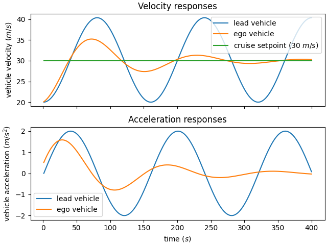
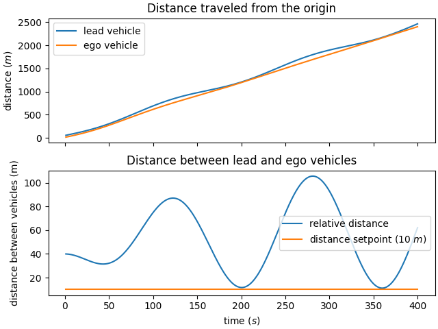
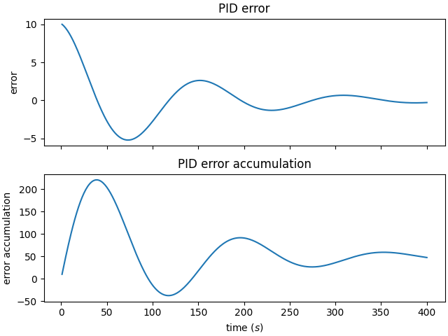

adaptive cruise control (ACC) is a vehicle control system that modifies the speed of the ego vehicle in response to conditions on the road. the ACC operates in two modes: speed control and distance control. the control goal varies depending on which mode is set. the goal of the system is to maintain the cruise speed with speed control, whilst also ensuring a safe distance between the ego vehicle and the lead vehicle is maintained. another constraint on the system is minimum and maximum acceleration, to ensure for any hard brake (for example) the driver does not experience high Gs.
the entire system consists of two vehicles: an ego vehicle and a lead vehicle. both vehicles can be regarded as acting independently with a control force (external acceleration) applied through some heuristic.
this could be done with more rigor with regards to the dynamic model, but maybe another time. nonetheless, assuming that the vehicle acts purely in a one dimensional plane, either traveling forwards or backwards, by way of an applied force. this vehicle is assumed to be a point mass with some frontal area and the ability to have rolling friction with the ground. as such it can be expressed as
\(m \frac{dv(t)}{dt} = F_{control} - \frac{1}{2} \rho A v(t)^2 C_{D} - C_{rr} m g\)
where the forces are the sum of the engine (applied through the controller) force, air resistance, and rolling resistance. not much more detail is required as the system is incredibly simple and the controller output influences the acceleration which in turn updates the velocity and position. these are both updated according to
\(v = v + a * dt\)
and\(p = p + v * dt\)
where dt is some timestep.a short explanation of PID control. the input to the PID system is the actual value and a target value, and the error can be computed by taking the difference. this error is used by the proportional, integral, and derivative terms to produce some control output with the goal of converging the actual value to the target value. defining the error as above, then the implementation in C++ is
double error = setpoint - actual;
then the proportional value, proportional to the error, can be computed as
p_output = P * error;
the integral value, proportional to the integral of the error, can be computed as
i_output = I * error_sum;
and the derivative value, proportional to the change in error, can be computed as
d_output = - D * (actual-last_actual);
the control output is the sum of these three terms.
the lead vehicle acceleration was determined to oscillate sinusoidally in an attempt to repeatedly trigger the adaptive cruise control of the ego vehicle. the control force for the lead vehicle in implementation was bypassed, and the acceleration was set manually. it can be assumed that the effects of mass, air resistance, and rolling resistance are bundled into the sinusoidal acceleration value. this was manually set using
Vehicle::UpdateStateManual(acceleration);
the sinusoid was generated with the formula
acceleration = AMPLITUDE*sin(M_PI*CYCLES*i/SIMDURATION);
where AMPLITUDE was 2, M_PI was the pi constant, CYCLES was the number of cycles over the entire duration which was 5, i was the clock value (iterator), and SIMDURATION was the duration of the simulation.
the ego vehicle acceleration was determined through a control value returned by the PID controller through
Vehicle::UpdateState(acc.ApplyControl(lead.GetPosition(), ego.GetPosition(), ego.GetVelocity()));
as expected the .GetPosition() and .GetVelocity() methods return the position of the vehicle from the origin and the velocity of the vehicles, respectively. the acc.ApplyControl() method supplies the adaptive cruise control with the ability to find the distance between the lead and ego vehicles to ascertain if the set distance has been violated, and the ego relative velocity to ascertain whether the set velocity has been violated.
if the set distance is not violated, the control value is computed with the PID controller with
control = controller.Compute(actual_velocity, setpoint);
where actual_velocity is the vehicle's velocity and setpoint is the set distance (10m). the closer the velocity is to the setpoint, the smaller the control value (as less acceleration is required to reach the setpoint).
if the set distance is violated, and the vehicle has not yet collided with the lead vehicle then the control value is computed with
control = -controller.Compute(lead_distance-ego_distance, set_distance);
this value is negative to ensure lead_distance-ego_distance decelerated to reach the set distance value. if the vehicle seems to be on a collision course, the control value is computed with
control = -controller.Compute(0, set_distance);
only when the distance between the vehicles is less than 4m. this tricks the controller to thinking that the vehicle has collided without colliding yet. it might be a better idea to set it to some negative value to drive the controller to react harder.
once the control value has been determined, for the ego vehicle the acceleration is determined by
acceleration = 1/mass * (control - 0.5*rho*pow(velocity,2)*A*Cd - Crr*mass*g);
the bounds of the acceleration are checked, so cannot violate either the maximum or minimum. this was set to +3 and -3 \(m/s^2\).
the velocity and position, once the acceleration has been determined, is set through
velocity += acceleration * 0.2; position += velocity * 0.2;
which increments with a dt of 0.2s.
this updates for every tick of the simulation. as the lead vehicle oscillates and causes the set distance to be violated, the ego vehicle responds by decelerating until the distance is no longer violated. it then acts to converge on the velocity setpoint.
the PID values were P=80, I=10, D=10. the velocity and acceleration responses are below. the ego vehicle does not converge quickly, but it does converge to the velocity setpoint. the relationship between the acceleration and velocity values is correct, as observed by when the acceleration values are 0, the velocity values reach a maximum.

observing the distance traveled from the origin, the area between the curves at any instantaneous point signifies the difference between the vehicles. at the points where the curves seem to coincide, the distance was violated and the adaptive cruise controller responded. the second plot shows the relative distance oscillates as the lead vehicle tends to do so.

the error values drive the PID output. ideally the error converges to zero and the error accumulation reduces in growth over time. this is observed in the plots below.

the simulation should be tested with more PID values to better refine the response. For the repo, see github.com/case0x00/adaptive-cruise-control